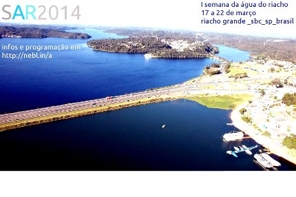

neblina


I Semana da Água do Riacho
1 SAR - I Semana da Água do Riacho Grande: 17 a 22 de março de 2014.
A documentação das atividades encontra-se disponível nos links abaixo:

Mais da metade do território do Riacho Grande encontra-se em Área de Proteção de Mananciais, sendo 18,6% dele correspondente a Represa Billings. A grande disponibilidade de cursos d'água no entorno do Riacho, assim como a sua localização em uma área de alta diversidade biológica é um fator positivo para a manutenção de ecossistemas aquáticos e também para a prestação de serviços ambientais. Os rios são importantes corredores biológicos que permitem a circulação de fauna e flora no interior das cidades. A localidade também possui um amplo campo para pesquisas em diversas áreas do conhecimento. Entretanto, Riacho Grande cristaliza conflitos acerca dos usos e ocupação em seu Sistema SocioEcológico, apresentando cenários e históricos complexos que envolvem a falta de planejamento urbano e do manejo ecológico adequado.
Dentro desse contexto surgiu a ideia de realizar a I Semana da Água do Riacho Grande, entre os dias 17 a 22 de março de 2014, sincronizada com as ações da Plataforma Water Wheel.A ideia é fazer uma ação colaborativa e integrada, buscando o manejo compartilhado do sistema socioecológico do Riacho Grande (população local, instituições de pesquisa, ONG, sociedade civil, governo). Trata-se de uma ação transversal, integrada que busca o empoderamento e desenvolvimento local.
{kind=link}
17 de março (segunda-feira), das 18h30 às 20hs:
Abertura - Associação dos Moradores do Lago Azul - Mapa
“A importância da água no Riacho Grande: meio ambiente, pessoas, sustentabilidade”
Maira Begalli - introdução/proposta da semana da água
Wagner Lino (subprefeito do Riacho Grande)
João Ricardo Caetano - Secretário de Gestão Ambiental de SBC.
18 de março (terça-feira), das 15hs às 17hs
* uma van sairá da subprefeitura às 14hs e retornará às 18hs - Rua Araguaia 265 - Fincos
Aldeia S.O.S Tatetos
Estrada Ernesto Zabeu, 200. Tatetos - mapa
“Arranjos Produtivos Locais: Serviços Ecossistêmicos e Sistemas SocioEcológicos”
Maira Begalli - Agroecologia e Agricultura Suportada pela Comunidade
Angélica Mosquera (Colombia)- Coberturas Vegetais e Serviços Ecossistêmicos
19 de março (quarta-feira), das 15h às 17hs:
Rua Araguaia, 284. mapa
Roda de Conversa + Oficina de fotografia com celular
“Como o conhecimento pode modificar o meio que vivemos”, na Biblioteca Machado de Assis, com alunos dos cursos de graduação da UFABC.
O objetivo, além de proporcionar interação entre os alunos da UFABC com os alunos da rede pública é realizar uma oficina de fotografia e gerar material para ser compartilhado na plataforma internacional Water Wheel.
Organização - Suzane Melo
15 vagas, por ordem de chegada.
20 de março (quinta-feira), das 16hs às 18hs:
EcoRota Visita ao Parque Estoril Visita de observação + Roda de Conversa
Rua Portugal nº 1100, Estoril
“Ecologia Urbana: Possibilidades e Desafios”
Amanda Wanderley - Comunicação digital para o compartilhamento, ensino e divulgação de cenários socioecológicos
María Valverde Brambila - A interdepêndencia da vulnerabilidade climática à socioeconômica.
Claudinei Melo (gestor do Parque) - O Parque Estoril e a importância da biodiversidade para o sistema socioecológico local.
21 de março (sexta-feira), das 16hs às 18hs:
Praça João Bassani, Rua Araguaia, em frente a Biblioteca Machado de Assis
Roda de conversa “A importância do plantio de árvores para a preservação da água”.
Roberto Resende e Isis Diniz farão um plantio simbólico de uma árvore de espécie nativa da Mata Atlântica, atividade realizada em parceria com a OSCIP Iniciatva Verde.
22 de março (sábado), das 20hs às 21hs:
Encerramento no Deck da Prainha, mapa
Projeção do Filme de Viver nos Rios, de Viver nas Ruas
Sergio Hora (subprefeitura do Riacho), Osvaldo Neto (Secretário de Cultura) e Felipe Cabral (diretor do filme)
----------
Localização/Como chegar:
de carro - a forma mais simples é pegar a Rodovia Anchieta desde o Terminal Sacomã (traçado para carros)
mas também é possível atravessar as balsas por Interlagos
transporte público - SP/Riacho - Não existe uma linha direta é preciso ir até São Bernardo do Campo e pegar outro ônibus no Terminal Metropolitano (traçado de transporte público)
-----------
Apoios
Subprefeitura do Riacho Grande
Secretaria de Gestão Ambiental de SBC
Associação Lago Azul
- 4390 leituras
links//labs
- 6732 leituras
sobre nebl.in/a

nebl.in/a é um lab que desenvolve atividades experimentais com tecnologias e ecologias livres, no Riacho Grande.
Riacho Grande é subdistrito de São Bernardo do Campo, localiza-se às margens da rodovia Anchieta, via de acesso ao Porto de Santos ( o maior da América Latina). Em seu entorno possui grandes fábricas automobilísticas, que foram palco de reinvindicações sindicalistas na década de 1980, durante o período de ditaura militar. Além disso, São Bernardo é a cidade_residência do presidente Lula (2002-2010).
Porém, Riacho Grande enfrenta dificuldades com infraestruturas básicas, ao mesmo tempo que encontra-se em uma região de manancial (possui grandes reservatórios de água potável), no coração da Mata Atlântica (bioma mais ameaçado de extinção no Brasil, só restam 7% de seu total original) que possui graves problemas, como: desmatamento e ocupações irregulares.
Segundo último censo do IBGE (2010), possui cerca de 50 mil habitantes (a grande maioria de baixa renda e escolaridade) que trabalham como empregadxs domésticxs, caseirxs e estão perdendo o vínculo ecológico com a região.
nebl.in/a acredita em:
- Promover a preservação do conhecimento ecológico local valorizando trocas ecológicas entre seres vivos.
- Agregar conhecimento ecológico local às tecnologias abertas para a preservação da biodiversidade local e recuperação de fauna, flora.
- Dispertar o interesse da população local para debates, ações e pensamentos acerca da biodiversidade local.
- Subsidiar formas de autonomia e sustentabilidade para a população local, englobando a compreensão da insustabilidade dos modelos de consumo dos grandes centros urbanos para que as pessoas valorizem suas vidas e sua localidade.
quer receber infos?
assine a lista - neblina@lists.riseup.net
- 2793 leituras
nebl.in/a
Localização
- 3434 leituras